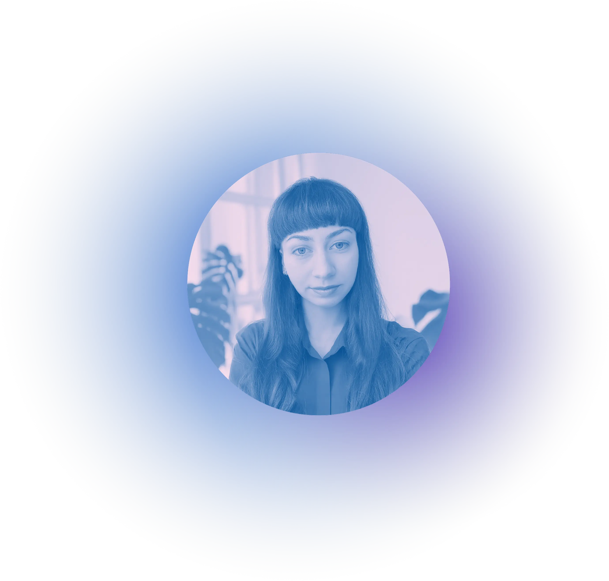

About me
Hi, I’m Kärt Lauriin Vaiknemets – a versatile designer based in Estonia.
My interest in design first started during art and multimedia studies, but my love for creative
problem-solving led me to specialize in UX/UI. While I really enjoy good visuals, I approach
every project more like a strategic challenge. I make sure the visuals are intentional,
focused on user psychology, business objectives, and the practical reality of building it.
I currently work at Topeltklikk
creative agency, where I've designed for a wide variety of
organizations while collaborating with developers and other designers. I’m always curious to
learn more and create designs that make a real impact.

Get in touch!
I am open to new work opportunities, learning experiences,
and other creative projects.
Feel free to reach out at: